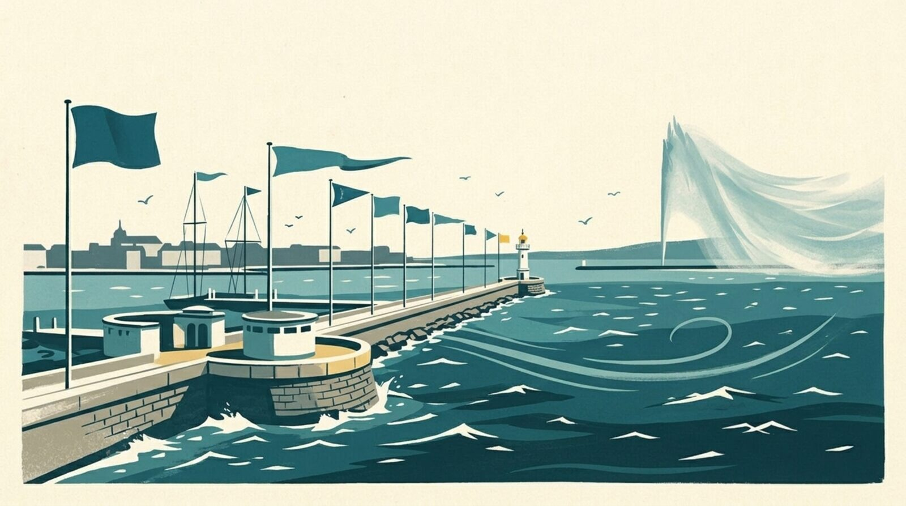

In short
Lake Geneva has four main winds: the bise (north-east, cold and dry, 15 to 90 km/h), the vaudaire (south-east, over 50 km/h on the upper lake), the joran (north-west, often in spring, up to over 100 km/h) and the séchard (a light daytime breeze). More than anything, it is the winds that drive the lake’s currents.
What are the winds of Lake Geneva?
- The bise: a cold, dry fair-weather wind from the north-east. It usually forms between a high to the north and a low over the Gulf of Genoa. It blows unevenly, between 15 and 90 km/h, and settles in for 3 to 10 days. Our article on the bise.
- The vaudaire: a south-easterly that hits the upper lake, on the French and Swiss sides, blowing at over 50 km/h.
- The joran: a north-westerly on the Swiss north shore, frequent in spring; it can exceed 100 km/h.
- The séchard: a light breeze blowing by day over the Petit and Grand lac.
What do winds do to the water?
According to Wikipedia, the currents caused by the mechanical action of the wind are the most important in the lake: first at the surface, then, in response, currents at depth running the opposite way. The wind also keeps the seiches going.
And for swimming and paddling?
A steady wind means waves and current: paddling and swimming call for a look at the forecast. The app’s beach-by-beach verdict takes wind and gusts into account.
The current wind, water temperature and bise, beach by beach, are in the My Lake app.
Lake Geneva’s water right now
Each beach’s water temperature is in the My Lake app, updated every three hours.